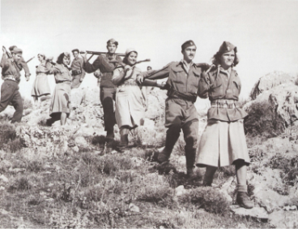
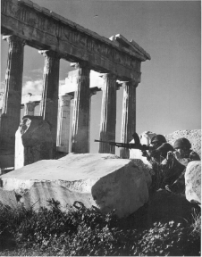
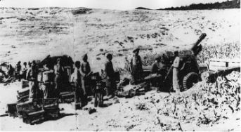

Ο ελληνικός εμφύλιος πόλεμος ξέσπασε τον Δεκέμβριο του 1944, παρασύροντας τις βρετανικές δυνάμεις σε μάχες στην Αθήνα. Κατά τη διάρκεια των δύο σταδίων του πολέμου, οι Έλληνες κομμουνιστές προσπάθησαν να αποκτήσουν τον έλεγχο της κυβέρνησης, αλλά απέτυχαν εν μέρει λόγω της σημαντικής δυτικής εμπλοκής πίσω από τις βασιλικές φατρίες και των επακόλουθων πολιτικών επιπλοκών. Μετά τον Δεύτερο Παγκόσμιο Πόλεμο, ολόκληρος ο κόσμος θα εμπλακεί στη σύγκρουση μεταξύ κομμουνισμού και καπιταλισμού. Οι ουλές από αυτές τις συγκρούσεις είναι ακόμα ορατές σήμερα.
Civil War
1944
[1] Μονάδα του κυβερνητικού στρατού κατά τη διάρκεια του ελληνικού εμφυλίου πολέμου (1945 -1949). Government army unit during the Greek Civil War (1945 - 1949).
Εμφύλιος Πόλεμος
The Greek Civil War erupted in December 1944, pulling British forces into combat in Athens. Over the two stages of the war, Greek communists attempted to gain control of the government, but were unsuccessful in part due to significant western involvement behind the Royalist factions and subsequent political complications. After World War II, the whole world would become embroiled in the conflict between communism and capitalism. The scars from these conflicts are still visible today.

[3] Άγγλοι στρατιώτες καταλαμβάνουν την Ακρόπολη, 1944. British soldiers occupying the Acropolis, 1944.
[2] Ανταρτοεπονίτες της υποδειγματικής ομάδας-διμοιρίας της ΙΙας Μεραρχίας του ΕΛΑΣ. Πάρνηθα. Partisans of the exemplary group-division of the 2nd Division of ELAS. Parnitha.


[1] Anonymous - The State Archives of the Republic of Macedonia (DARM) [2] Υπουργείο Εξωτερικών Photographer: Sjt. Johnson [3] https://greekreporter.com/2014/12/04/thedecember-1944-events-that-brought-the-greek-civil-war/